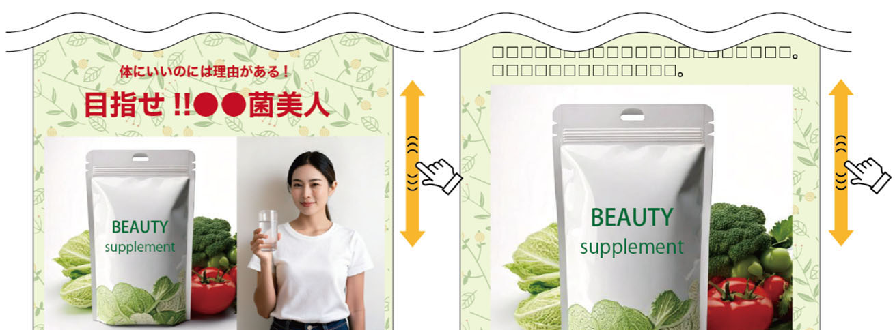
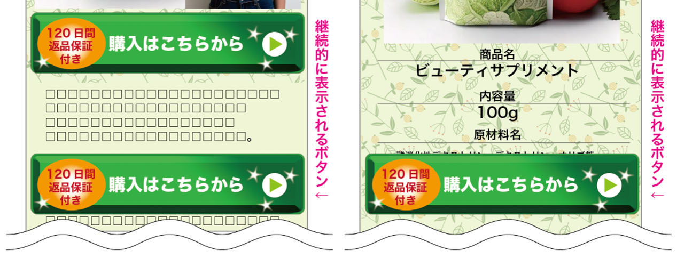

ダークパターン事例⑧ 執拗な繰り返し
資料での説明
事業者が望むことを消費者に行うよう繰り返し求めるもの
【例】
- 画面をスクロールしても、商品等の購入ボタンが継続して表示され続け、消費者に購入ボタンを押すよう繰り返し求める。


example-store.jp/item
ピュアイオン・ウォーター
定期初回 980円 （2回目以降 4,800円）
標高1,200mの湧水を、非加熱のままボトルに詰めました。独自のセラミックでマイナスイオンをまとい、口に含んだ瞬間から、体の内側が澄むような軽さです。
おすすめの飲み方
朝起きてすぐ、常温のまま200ml。食事の30分前に残りの300mlをゆっくり。冷やしても構いません。常温のほうがイオンが安定します。
原材料
水（鉱水）。保存料・着色料・香料は不使用。1本500ml。定期便は30日ごとにお届けします。開封後は冷蔵庫で保管し、その日のうちに飲みきってください。
お客様の声
「朝のコップ1杯で、なんとなく軽い。」（50代・購入者）
※個人の感想であり、効果を保証するものではありません。
配送
通常3〜5日。クール便は別料金です。
example-store.jp/item
ピュアイオン・ウォーター
定期初回 980円 （2回目以降 4,800円）
標高1,200mの湧水を、非加熱のままボトルに詰めました。独自のセラミックでマイナスイオンをまとい、口に含んだ瞬間から、体の内側が澄むような軽さです。
おすすめの飲み方
朝起きてすぐ、常温のまま200ml。食事の30分前に残りの300mlをゆっくり。冷やしても構いません。常温のほうがイオンが安定します。
原材料
水（鉱水）。保存料・着色料・香料は不使用。1本500ml。定期便は30日ごとにお届けします。開封後は冷蔵庫で保管し、その日のうちに飲みきってください。
お客様の声
「朝のコップ1杯で、なんとなく軽い。」（50代・購入者）
※個人の感想であり、効果を保証するものではありません。
配送
通常3〜5日。クール便は別料金です。
解説
購入ボタンを常に追従させると、情報を読んで判断している間も繰り返し購入を促し続けます。特に画面が小さい端末では閲覧領域も狭くなります。
改善例では、価格・配送・返品条件を確認できる場所に購入ボタンを置きます。追従させる必要がある場合も、閉じる手段を用意し、画面を大きく占有しないようにします。